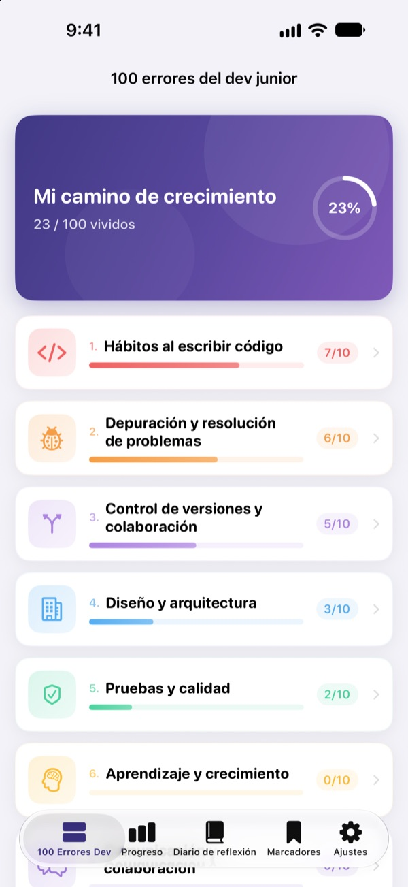
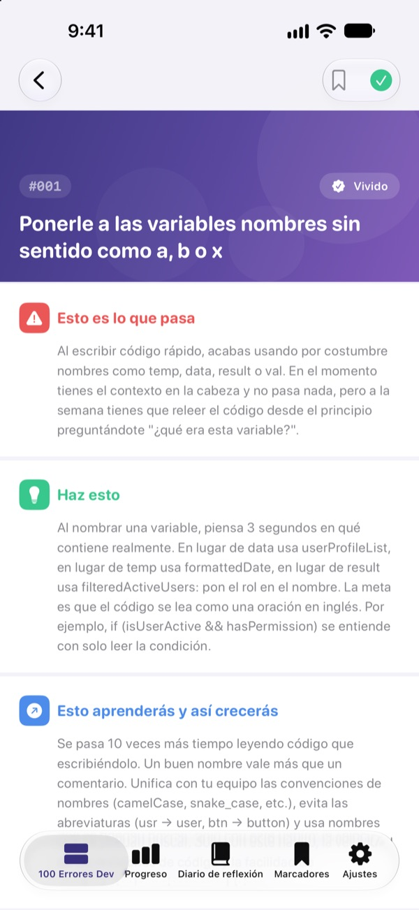
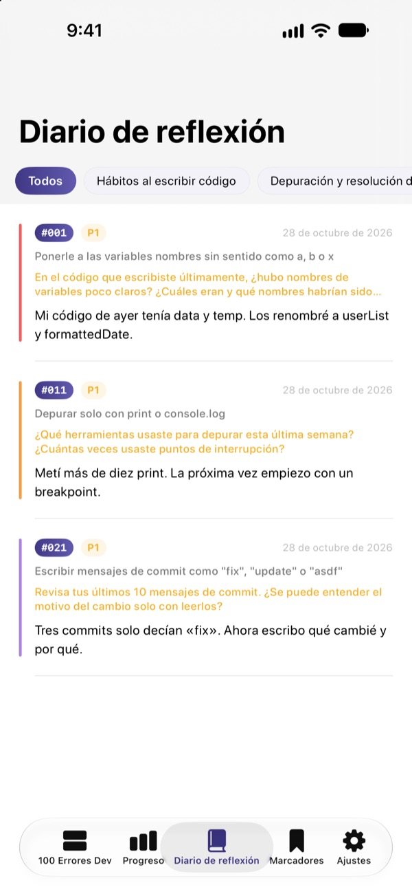
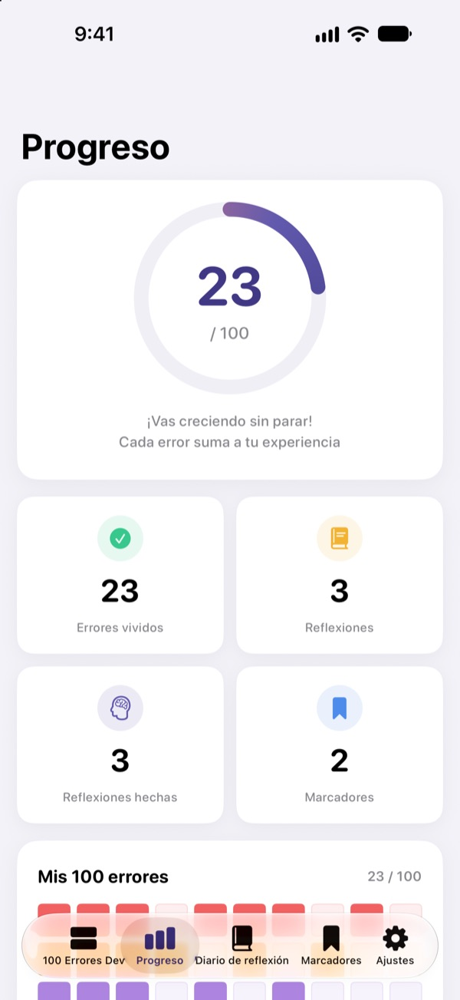

Conoce los errores
antes de que duelan
Hemos reunido los 100 errores que más cometen los desarrolladores junior. En cada uno lees qué pasa, qué hacer y qué aprendes, y respondes una pregunta de reflexión para no tropezar dos veces con la misma piedra.
Los 30 primeros errores son gratis. Funciona en iPhone, iPad y Mac.

Abre un error
Son los 10 errores de la primera categoría gratuita, tal cual aparecen en la app. Marca como Vivido los que ya te han pasado.
¿Otra vez el mismo comentario en la revisión de código?
Nombres de variables crípticos, funciones de 200 líneas, código copiado y pegado. Todos los seniors han pasado por ahí, pero tú solo te enteras cuando te la pegas. 100 Errores Dev te enseña esos errores antes y te hace reflexionar sobre tu propio trabajo para que no los repitas.
Qué pasa, qué hacer, qué aprendes
Cada error se explica en tres partes: qué pasa, qué hacer y qué aprenderás de él.
Diez categorías, desde los hábitos al escribir código hasta la seguridad y el rendimiento, con los errores que se repiten de verdad en los equipos.

Preguntas de reflexión para que se quede
Cada error trae 4 preguntas de reflexión, 400 en total. Respóndelas pensando en tus proyectos y lo que lees se convierte en experiencia.
Tus respuestas se guardan en el diario de reflexión, ordenadas por categoría, para volver a ellas cuando quieras.

Mira cuánto has avanzado
Marca los errores que ya has vivido y verás crecer tu progreso por categoría y en total. Guarda en marcadores lo que quieras repasar.
Todo se sincroniza con iCloud entre iPhone, iPad y Mac.

Empieza en tres pasos
- 1
Elige una categoría
Hábitos al escribir código, depuración y control de versiones están abiertas gratis.
- 2
Lee y marca
Toca Vivido en los errores que ya has cometido.
- 3
Reflexiona
Escribe una respuesta, aunque sea corta. Se guarda en tu diario de reflexión.
Las 10 categorías
- Hábitos al escribir código
- #001–#010 · Gratis
- Depuración y resolución de problemas
- #011–#020 · Gratis
- Control de versiones y colaboración
- #021–#030 · Gratis
- Diseño y arquitectura
- #031–#040 · PRO
- Pruebas y calidad
- #041–#050 · PRO
- Aprendizaje y crecimiento
- #051–#060 · PRO
- Comunicación y colaboración
- #061–#070 · PRO
- Despliegue y operación
- #071–#080 · PRO
- Seguridad y datos
- #081–#090 · PRO
- Rendimiento y optimización
- #091–#100 · PRO
Cada categoría tiene 10 errores, y cada error, 4 preguntas de reflexión.
30 gratis. Los 100 con PRO.
Gratis
- Las 3 primeras categorías, 30 errores
- Sus 120 preguntas de reflexión
- Checklist, diario de reflexión, progreso y marcadores
- Sincronización con iCloud (iPhone, iPad, Mac)
100 Errores Dev PRO
- Las otras 7 categorías, 70 errores más (#031–#100)
- 280 preguntas de reflexión más
- Todas las actualizaciones de contenido futuras
Suscripción mensual, anual (hasta un 50 % más barata que la mensual) o compra única de por vida.
Sin recopilar datos personales, sin analíticas y sin anuncios.
Preguntas frecuentes
¿Qué es gratis?
Los 30 errores y sus preguntas de las categorías Hábitos al escribir código, Depuración y resolución de problemas y Control de versiones y colaboración. La checklist, el diario de reflexión, el progreso, los marcadores y la sincronización con iCloud también son gratis.
¿Cómo uso PRO en otro dispositivo?
Inicia sesión con el mismo Apple ID y toca Restaurar compras en la pantalla de suscripción.
¿Cómo cancelo la suscripción?
Cuando quieras, en Ajustes › Apple ID › Suscripciones. Se renueva automáticamente salvo que la canceles al menos 24 horas antes de que termine el periodo actual. La compra de por vida se paga una sola vez.
Mis datos no se sincronizan entre dispositivos.
Comprueba que todos tus dispositivos usan el mismo Apple ID en iCloud y que iCloud está activado para esta app en Ajustes. Para sincronizar también hace falta conexión.
¿Cómo lo borro todo?
Toca Restablecer todos los datos en los ajustes de la app. Se borran tus marcas, reflexiones y marcadores, y no se puede deshacer.
¿En qué dispositivos funciona?
En iPhone, iPad y Mac. PRO se desbloquea en todos los dispositivos con el mismo Apple ID.
¿Se envían mis datos a algún sitio?
No. Tus marcas y reflexiones se guardan solo en tus dispositivos y en tu propio iCloud. La app no recopila datos personales ni tiene analíticas o anuncios.
¿Dudas o sugerencias? Escribe a leeo@kakao.com.